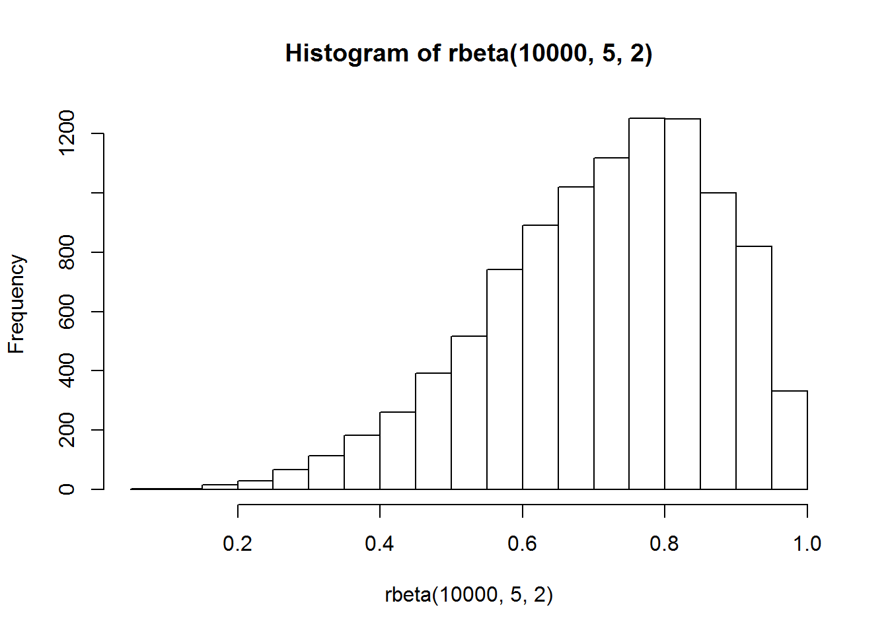
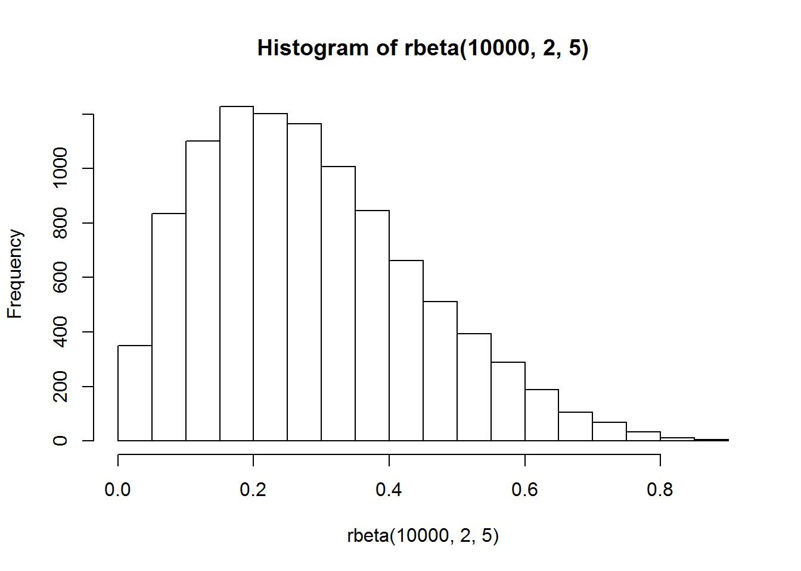

Chapter 5 Covariation
If variation describes the behaviors within a variable, covariation describes the behavior between variables.
Covariation is the tendency for the values of two or more variables to vary together in a related way.
5.1 Categorical + continuous variable
library(tidyverse)
ggplot(diamonds, aes(price))+
geom_freqpoly(binwidth = 500)
ggplot(diamonds, aes(price))+
geom_freqpoly(aes(color = cut), binwidth = 500)# standardized count where the area under each frequency polygon is one
ggplot(diamonds, aes(x = price, y = ..density..))+
geom_freqpoly(aes(color = cut), binwidth = 500)
# boxplot
ggplot(diamonds, aes(cut, price))+
geom_boxplot()model = model name
displ = engine displacement, in litres
year = year of manufacture
cyl = number of cylinders
trans = type of transmission
drv => f = front-wheel drive, r = rear wheel drive, 4 = 4wd
cty = city miles per gallon
hwy = highway miles per gallon
fl = fuel type
class = “type” of car
summary(mpg)## manufacturer model displ year
## Length:234 Length:234 Min. :1.600 Min. :1999
## Class :character Class :character 1st Qu.:2.400 1st Qu.:1999
## Mode :character Mode :character Median :3.300 Median :2004
## Mean :3.472 Mean :2004
## 3rd Qu.:4.600 3rd Qu.:2008
## Max. :7.000 Max. :2008
## cyl trans drv cty
## Min. :4.000 Length:234 Length:234 Min. : 9.00
## 1st Qu.:4.000 Class :character Class :character 1st Qu.:14.00
## Median :6.000 Mode :character Mode :character Median :17.00
## Mean :5.889 Mean :16.86
## 3rd Qu.:8.000 3rd Qu.:19.00
## Max. :8.000 Max. :35.00
## hwy fl class
## Min. :12.00 Length:234 Length:234
## 1st Qu.:18.00 Class :character Class :character
## Median :24.00 Mode :character Mode :character
## Mean :23.44
## 3rd Qu.:27.00
## Max. :44.00ggplot(mpg)+
geom_boxplot(aes(x = reorder(class, hwy, FUN = median), y = hwy))
ggplot(mpg)+
geom_boxplot(aes(x = reorder(class, hwy, FUN = median), y = hwy))+
coord_flip()
5.2 Two categorical variables
ggplot(diamonds)+
geom_count(aes(cut, color))diamonds%>%
count(color, cut)## # A tibble: 35 x 3
## color cut n
## <ord> <ord> <int>
## 1 D Fair 163
## 2 D Good 662
## 3 D Very Good 1513
## 4 D Premium 1603
## 5 D Ideal 2834
## 6 E Fair 224
## 7 E Good 933
## 8 E Very Good 2400
## 9 E Premium 2337
## 10 E Ideal 3903
## # ... with 25 more rowsdiamonds%>%
count(color, cut)%>%
ggplot(aes(color, cut))+
geom_tile(aes(fill=n))
#install.packages("seriation")5.3 Two continuous variables
ggplot(diamonds)+
geom_point(aes(carat, price))
# add transparency
ggplot(diamonds)+
geom_point(aes(carat, price), alpha = 1/100)# bin two variables
ggplot(diamonds)+
geom_bin2d(aes(carat, price))#install.packages("hexbin")
ggplot(diamonds)+
geom_hex(aes(carat, price))
#bin one variable
ggplot(diamonds,aes(carat, price))+
geom_boxplot(aes(group = cut_width(carat, 0.1)))ggplot(diamonds,aes(carat, price))+
geom_boxplot(aes(group = cut_width(carat, 0.5)))